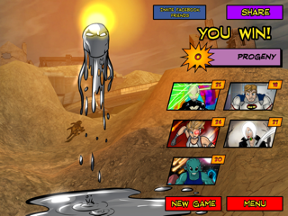

11 posts · 823 views · started 2016-04-18 08:57 UTC
RO
robb8888
2016-04-18 08:57 UTC
#1
Any successful/unsuccessful Progeny stories yet? I was dreading taking him on, but finally took the plunge: DW Visionary, Legacy, TL Tach, Nightmist, Tempest in the easiest environment I could think of (Final Wasteland).
The end result -- a surprisingly easy victory! See attached screenshot. I got a little lucky in that Progeny didn't play anything overwhelmingly awful in the initial draw. After that, though, DW Viz was extremely useful in keeping the really bad cards away. TL Tach, NM's Enlightenment, and Tempest's Localized Hurricane gave the heroes so many draws, that we had an optimal setup in no time: Legacy had the Ring, and was both buffing damage and healing (Motivational Charge) every turn, keeping the heroes away from that 10 HP death zone. Tach pulled Hypersonic Assault after Hypersonic Assault, and cleared the environment board when it got too full of pesky monsters. A timely Twist the Ether further reduced Progeny's damage. Nightmist and Legacy kept Progeny's deck bottled up with MistBounds and TakeDowns. Tempest was the main damage dealer, equipped with Localized Hurricane and the Gene-Bound Shackles, and used Reclaim from the Deeps to keep the important cards (Hypersonic Assault, Heroic Interception, MistBound, TakeDown) coming back. We finished him off with a double Lightspeed Barrage for 26 points.
In the end, no hero was below 18 HP, and only one (Legacy) was below 20. A couple of early thoughts for anyone having trouble with Progeny:
Managing your heroes' HP is *crucial*. Progeny's whole game mechanic is premised on this: Damage all of the heroes every round until one falls below 10 HP. Once one of your heroes goes below 10 HP, Progeny flips, and mercilessly pounds the lowest HP hero for *H -1* every turn until that hero is dead. He then flips back and starts the process over. Once one of your heroes goes below 15, start looking for ways to heal/protect that hero.
...That being said, I didn't try this, but one really spammy technique might be to put a hero on the team that has a relatively ready way of avoiding all of one type/source of damage (Nightmist's Mist Form, Viz' Coccoon, Scholar's Flesh to Iron/Expect the Worst, Legacy Next Evolution), and letting him/her get below 10 HP. Once this happens, Progeny's main damage efforts will be (uselessly) directed towards hitting the invulnerable hero, leaving your other heroes relatively free to pound him.
I found that keeping his deck controlled/bottled up was the most useful tool. His one-shots and ongoings are the most devastating cards; if you can keep him from pulling those, his base power (2 energy damage to each hero) can be easily managed with all of the traditional damage-reduction techniques, and even if he has Scions out, some of them are much more manageable than others.
Keeping the deck controlled isn't all that difficult, either. Unlike many tough villains (Dawn, Spite, Infinitor, La Capitan, etc.), he doesn't have a lot of "do X, then play the top card of the villain deck" cards. He also doesn't have any "pull X cards out of the trash" cards. Since he'll likely be playing only one card every turn, if you can control what cards are coming to the top of the deck, you can prepare for it.
If you don't have the right heroes to control the deck, then good ongoing destruction is important. Similar to Iron Legacy, Progeny's ongoings are nasty: One prevents you from playing any hero cards *and* destroys your ongoings. Another makes Progeny's damage irreducible *and* gives him damage reduction. Another increases his damage by 2 *and* destroys your equipment.
That being said, it's probably going to be impossible to prevent him from having two Scions out at any given time. There are just too many Scions (or cards that let him draw new Scions) in his deck. Realize, though, that some Scions are worse than others. I chose the one that forces a single card discard, and the one that heals him 2 pts. Between Nightmist, TL Tach, and Tempest (with Localized Hurricane), I had an obscene amount of card draw, so discarding a few every round was no big deal. And with Legacy giving +2 DMG every hit, the other scion was a wash. The +1 damage buff to him is awful, and the "play the top card of the villain deck" Scion is a killer.
Another intriguing strategy might be to try to play Argent Adept/Cedistic Dissonance. Scions are *not* indestructible, so if you can make it through the lengthy setup, AA can destroy Scions (destroying an instrument every time, unfortunately).

MA
mackcrockett
2016-04-18 12:05 UTC
#2
I don't find progeny as difficult as most 4 villains, I think I've only lost to him once including physical games. The night Wrath dropped on Android I took the Prime Wardens up against him and absolutely trounced him. Haka was at 33 HP, Argent adept at 23, everyone else was max, and I could easily have waited until the next turn to top those two off. (dynamic syphon on Tempest and one on AA with Cosmic Crest making Cosmic and all of his constructs immune to Progeny's end of turn hit-all. the healing off of cleansing downpour offset the damage to everyone else, and Fanatic, Haka, and Tempest's one shots handled the damage to progeny. Embolden on AA was just insult to injury.) it wasn't on advanced, but I'm not sure how much of a difference that really would have made.
Wraith is really good against him, you can lock down his damage with stun bolts, and once (if) a hero drops below ten, you pull out smoke bombs.
TA
TakeWalker
2016-04-18 12:45 UTC
#3
For being a 4, I found him on the easy side of that rating my first time through.
But have you tried him on Advanced? Geez. It took me at least a half-dozen tries to beat him, and when I did, it was thanks mostly to deck control, with some fire-abatement clericking from Ra. He spent the last two or three rounds of the game at 4 HP with me unable to hurt him, 3 out of 5 heroes incapped, and I think Visionary finally got the last hit. I never wanna do that again. XD
I really do love his theme, though. "The Inevitable", "Obvious Futility", all this doom and gloom stuff and it really fits how he plays. He's like Spite, only not boring!
RL
Radman_The_Lucario
2016-04-18 13:01 UTC
#4
Beat him the one and only time I faced him. Team full of Prime Wardens on Wagner. Not a single hero went under 10 (Thanks to Downpour from Tempest). Also played most of the game with Frost and Blight Scions, meaning damage was minimal, and he played no extra cards. Guess I was just lucky
SA
saykhia
2016-04-18 14:26 UTC
#5
Played against him last night and won, largely thanks to Sky-scraper getting incapped in her Huge mode - her incap power of acting as a 1 HP indestructible target against Progeny is kinda OP.
Also had Cap’n Cosmic, Nightmist and Scholar in Dok’Thorath. Cap’n got incapped fairly early (still learning all these new heroes!). Nightmist and Scholar took turns playing HP yo-yo and took down Big Bad Silver (although last hit was from a Freedom Fighter).
Interesting game where Amulet of the Elder Gods and Starshield never came into my hand (but into discard pile) - had to try new styles of balancing damage-dealing with use of Mists of Time and Mist-fueled Recovery.
EM
emcg575797
2016-04-18 16:07 UTC
#6
Fought Progency at Insula Primalis with a team of the Dark Watch threesome (Expatriette, Mr Fixer and Nightmist) and The Scholar. Dark Watch went down in a blaze of glory early on, with Progency at about 60HP and The Scholar at 12.
Thanks to two or three Truth Seekers a turn The Scholar held on for a comfortable win with him still over 10hp. And yes, I do think that The Scholar if setup properly can take out any villain. I may have one-shot a full strength Iron Legacy this one time (at band camp).
HS
hstein3
2016-04-18 19:27 UTC
#7
I beat Progeny on my first go round. I'd attribute that largely to luck of the draw, but having Chronoranger in play made a lot of difference, too. Set up right, he can do crushing amounts of damage, and you're definitely better off if you can get a fast game against Progeny.
RO
robb8888
2016-04-19 03:40 UTC
#8
What do you do against those villains that destroy all of your Ongoings at one shot? (Dawn, Omnitron, and Progeny himself, to think of a few). If all of Scholar's Forms are suddenly in the trash, he has no way to bring them back out again except Don't Dismiss Anything.
EM
emcg575797
2016-04-19 06:14 UTC
#9
I try and keep at least a couple of Forms in hand, just in case a villain clears the board. For example, I normally play only one Flesh to Iron (unless it's Iron Legacy) as I don't mind taking a little bit of damage as he easily heals himself. My style of play with The Scholar is to have as many cards in hand as possible and then react to what the villain is doing.
In the Progency game, I did play a number of ongoings as fodder so when he took out 4 I still had Truth Seeker in play.
If you can get out of turn card plays (Know When To Hold Fast or Transmutative Recovery) then you'll be surprised how quickly how quickly he can cycle through his deck.
RO
robb8888
2016-04-22 06:02 UTC
#10
I just tried the Prime Wardens as well – what a team! With Dynamic Syphon on AA, and him spamming Lyre/Harp/Alacritous Sub/Inspiring Super, I got either two out-of-turn card plays or one play and one out of turn power, plus 2HP healing, every time he used a power. With that kind of play, I got out tons of CC's constructs, plus Vernal Sonata/Reclaim from the Deep we're bringing back Haka's Ground Pounds time and time again, leaving Progeny helpless. Every hero finished above 20 pts, and I could have strung it out for a flawless victory.
AA/Scholar used to be my favorite combo for out of turn plays, but AA/CC beat that hands down. There were rounds when I got as many as 6-8 out of turn plays/powers, because the other heroes would hit Dynamic Syphon for 1 pt, starting AA's spam chain of destruction all over again.
BY
byc
2016-04-22 15:32 UTC
#11
I've only beaten Progeny once on advanced with random teams in 10+ tries. And none of the fails were close.